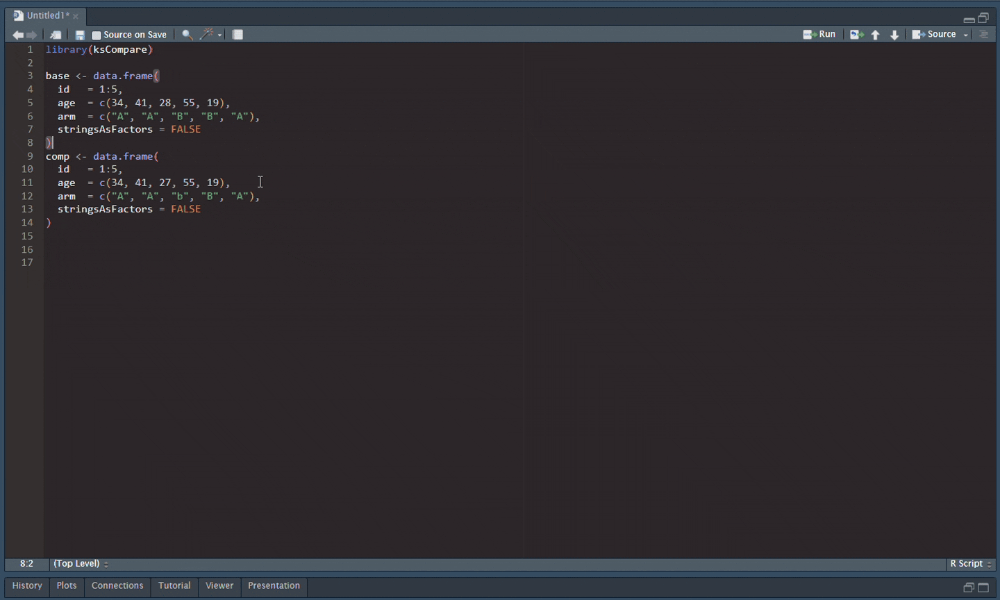

Smart data-frame comparison in the spirit of SAS
PROC COMPARE.

ksCompare is a tidyverse-native R package for comparing two data frames with the rigor expected of clinical / pharma QC workflows. It combines strict cell-by-cell comparison with review helpers, report generation, and pipeline-friendly assertions.
Why ksCompare exists
In clinical-trial programming, double programming is still one of the most credible ways to QC derived datasets: one programmer builds the production result, another independently recreates it, and the two outputs are compared as evidence that they truly match. In SAS-based workflows, PROC COMPARE has long been the standard tool for that final check because it turns “these datasets look similar” into something auditable and reviewable.
R has many general data-manipulation tools, but far less support for this specific QC step as a first-class workflow. ksCompare is an attempt to bring the spirit of PROC COMPARE into R and push it further: compare structure and values, surface unmatched rows, support tolerances and SAS-aware semantics, and produce interactive outputs that make dataset QC easier to review, explain, and document.

Installation
Install the package from r-universe:
install.packages(
"ksCompare",
repos = c(
"https://crow16384.r-universe.dev",
"https://cloud.r-project.org"
)
)Some features rely on suggested packages:
-
htmltools+reactablefor self-contained HTML reports. -
openxlsx2for Excel export. -
havenandarrowfor direct file-path input. -
pointblankandarsenalfor workflow integrations.
What it does
- Per-column tolerances: absolute, relative, and ULP.
- Intelligent type reconciliation, including
haven_labelledand SAS special missings (.A–.Z,._). - Automatic key inference (
by = "auto") and explicit duplicate-key strategies (first,last,keep_all,all_pairs,error). - Triage helpers:
ks_glance(),ks_tidy(),ks_cause_summary(),ks_row_diff_summary(), andks_unmatched_rows(). - Opt-in diff-pattern detection via
find_patterns = TRUE. - Rich console output (
cli) plus self-contained HTML and Excel reports. - Pipeline gates (
ks_assert_clean(),ks_pointblank_step()). - SAS-parity surface:
as_outbase()/as_outcomp()/as_outdif()/as_outnoequal()andks_sysinfo().
ks_compare() accepts both in-memory data frames and file paths for .sas7bdat, .xpt, .parquet, .feather, .rds, .RData, .csv, and .tsv inputs.
Quick start
library(ksCompare)
base <- data.frame(
id = 1:4,
age = c(34, 41, 28, 55),
arm = c("A", "A", "B", "B")
)
comp <- data.frame(
id = 1:4,
age = c(34, 41, 27, 55),
arm = c("A", "A", "b", "B")
)
cmp <- ks_compare(base, comp, by = "id")
cmp
ks_glance(cmp)
ks_tidy(cmp)
ks_cause_summary(cmp)
ks_row_diff_summary(cmp)If you want recurring diff shapes summarized, turn pattern detection on:
ks_compare(base, comp, by = "id", find_patterns = TRUE)$pattern_summaryReports
ks_report_html(cmp, "report.html")
ks_report_xlsx(cmp, "report.xlsx")The HTML report is self-contained and does not require Quarto, Pandoc, or internet access.
SAS PROC COMPARE migration
# PROC COMPARE BASE=a COMPARE=b ID id; OUT=outbase; OUTDIF; OUTNOEQUAL;
cmp <- ks_compare(a, b, by = "id")
as_outbase(cmp)
as_outdif(cmp)
as_outnoequal(cmp)
ks_sysinfo(cmp)See vignette("from-proc-compare") for a full mapping.
Pipeline gates
ks_compare(target, qc, by = "USUBJID") |>
ks_assert_clean(max_value_diffs = 0L)Optional integrations
Optional integrations include ks_pointblank_step() for pointblank pipelines and as_ks_comparison() for teams moving from arsenal::comparedf().
License
MIT. See LICENSE.